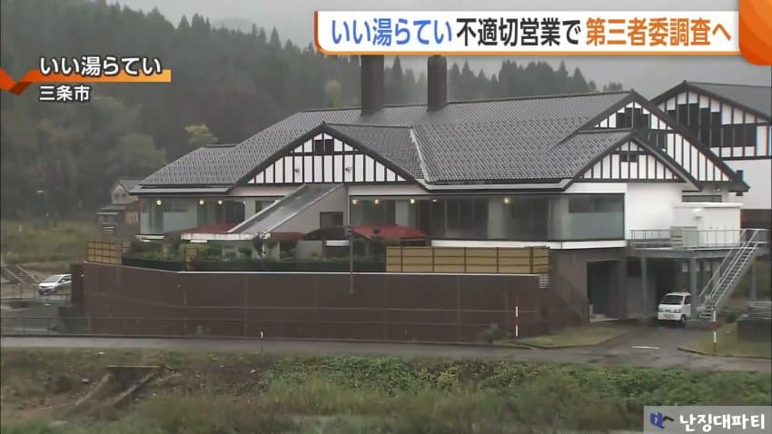
문제를 일으킨 곳은 일본 니가타현 산조시의 온천시설 '이이유라테'
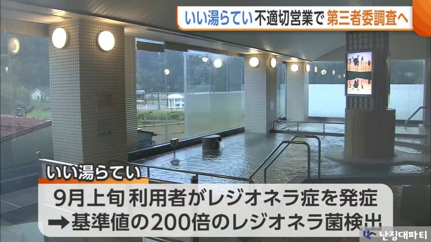
올해 9월 상순 이 온천을 이용한 손님이 레지오넬라증에 걸렸고
온천 시설 조사 결과 기준치의 200배를 초과하는 레지오넬라균이 검출됨
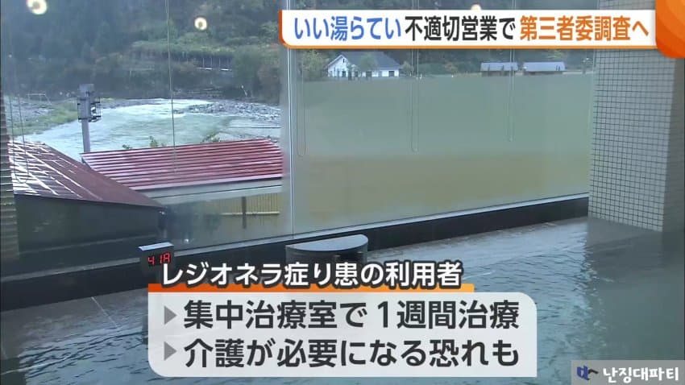
피해 고객은 집중치료실에서 1주일간 치료을 받아야 할 정도로 상태가 위중했으며
앞으로 계속 간병이 필요해질 우려가 있다고 함
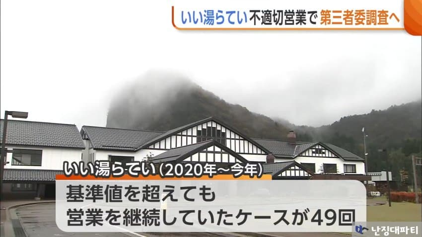
더 충격적인 건 이후의 조사 결과인데
이 온천은 2020년부터 올해까지 6년여의 기간 동안 총 49차례에 걸쳐 기준치를 초과했음에도
그걸 고의적으로 숨긴 채 영업을 계속 해왔다고 함
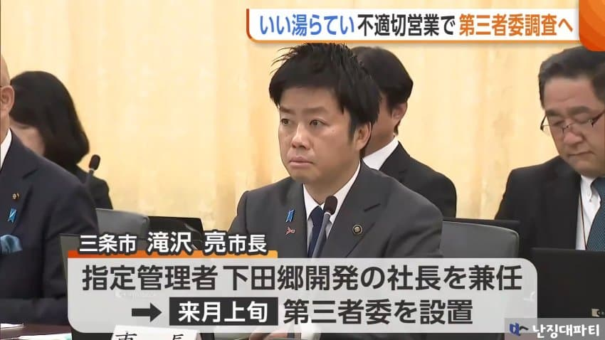
이러한 상황을 고려해 '시타다고 개발'의 사장을 겸임하고 있는 산조시 시장은 변호사 3명으로 구성된 제3자위원회를 내달 당순 설치하겠다고 발표함
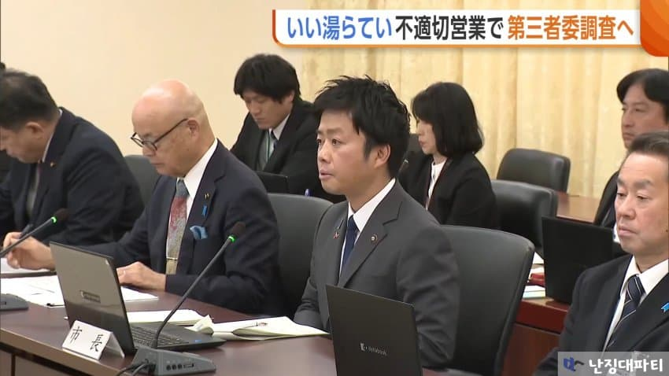
더 큰 문제는 이것이 빙산의 일각일 수도 있다는 거임
이 업체는 지난 2010년에도 기준치를 크게 초과하는 레지오넬라균이 검출된 바 있는데
그 이후로 십수년간 전혀 개선이 되지 않았던 걸 보면 오랜 기관 관리에 문제가 있었을 거라고 함
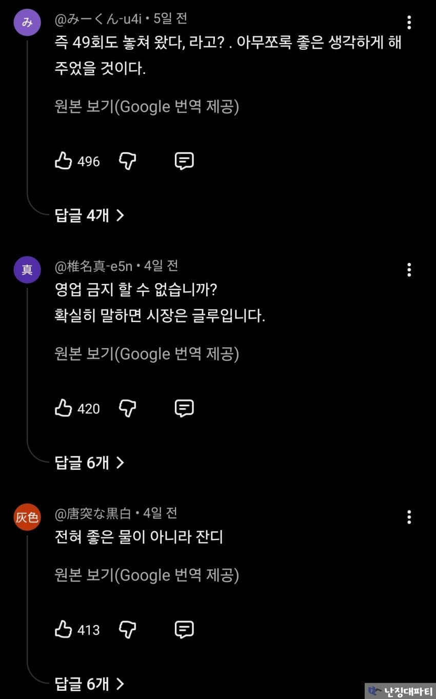
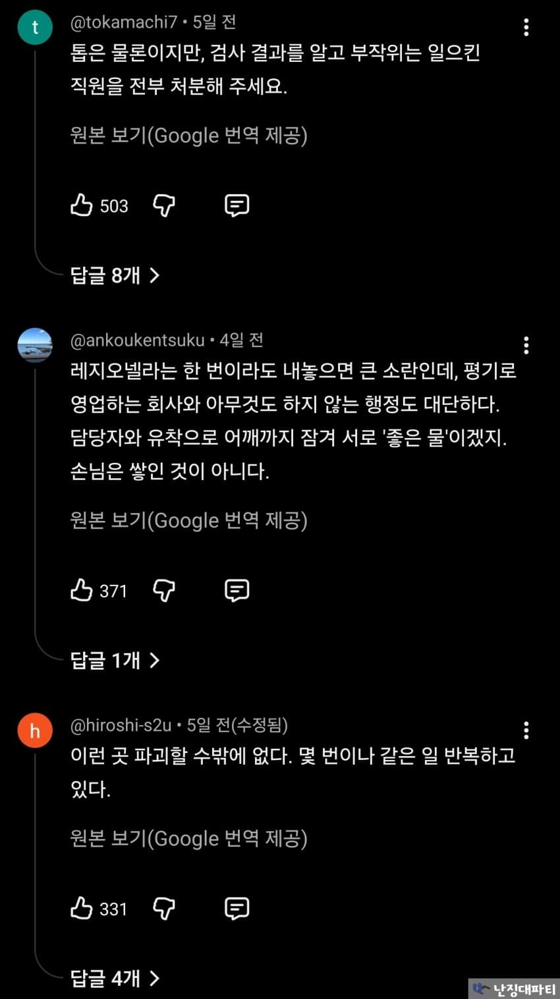
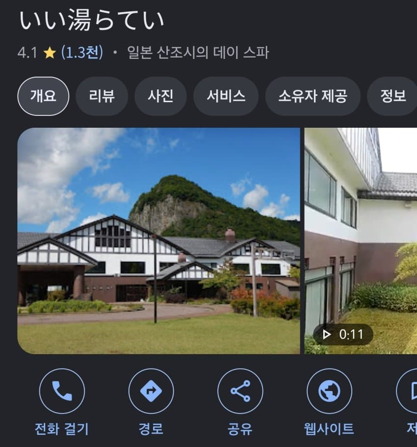
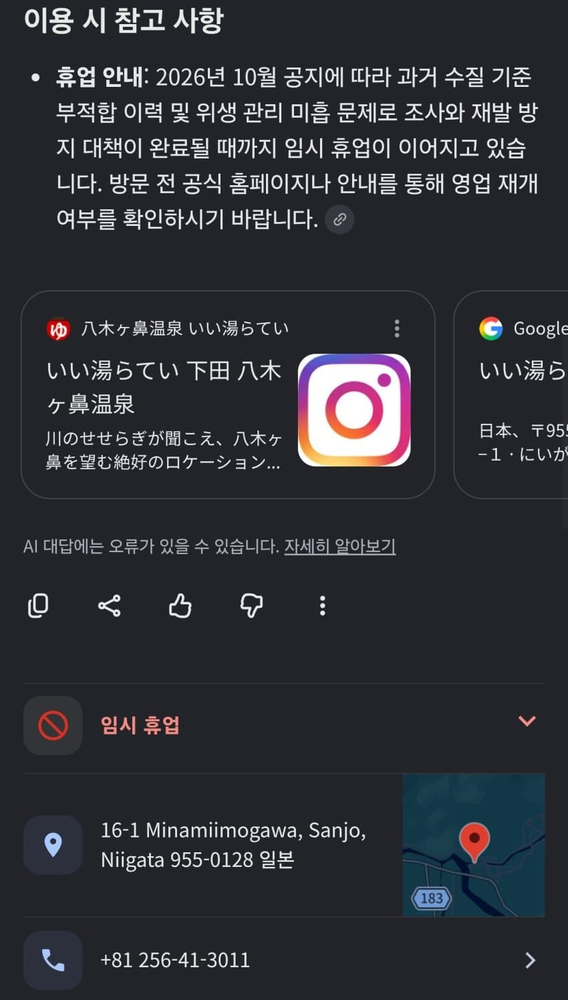
임시휴업 ㅋㅋㅋㅋㅋㅋㅋ
참고로 이 곳은 니가타현에 위치한 온천이고
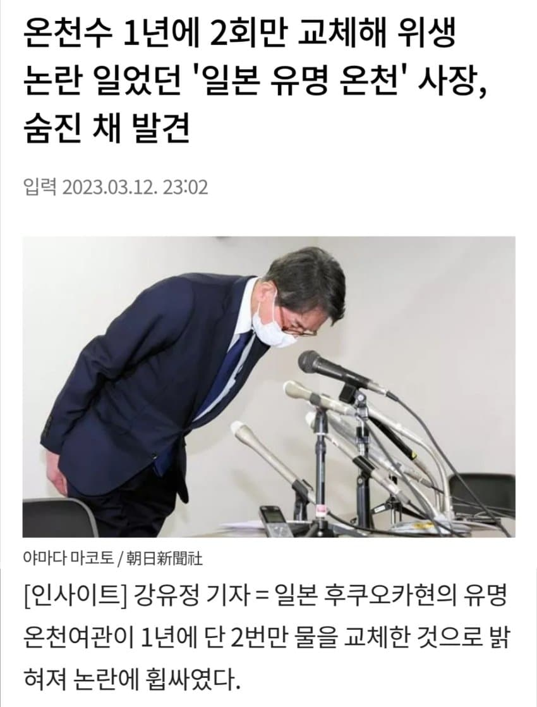
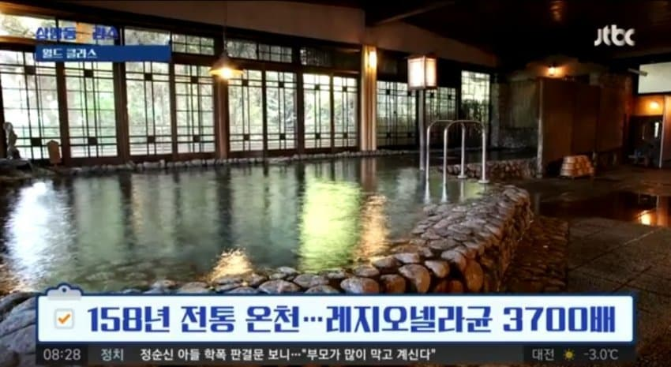
몇년 전에 논란이 되었던 1년에 물 두 번 가는 온천은 후쿠오카현 치쿠시노시의 '다이마루 별장'이라는 곳이니 전혀 다른 사건임
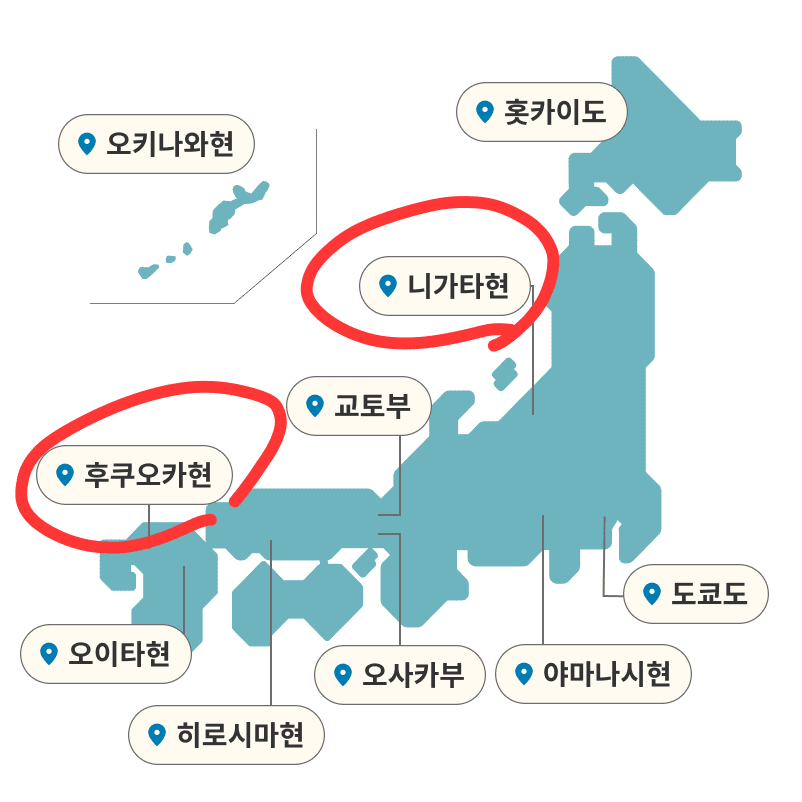
애초에 그냥 지역 자체가 한참 떨어진 곳임 ㅋ
그냥 일본 전역의 온천들은 가짜 아니면 위생 관리 개판, 둘 중 하나라고 생각하면 됨
일본 온천 차원이 달라! (레지오넬라균 배양장에 들어가며)
댓글
수집 당시 댓글 198개
ㅇㅇ · 11.28 09:47:58
ㅇㅇ · 11.28 09:49:06
· ㅇㅇ · 11.28 09:49:13
ㄹㅇㅋㅋ
Кошечка · 11.28 09:50:32
· Кошечка · 11.28 09:51:22
· ㅇㅇ · 11.28 12:53:51
ㅇㅇ · 11.28 09:50:39
· ㅇㅇ · 11.28 09:52:01
· ㅇㅇ · 11.28 09:52:21
· 공정성장 · 11.28 09:54:34
· ㅂ · 11.28 10:22:00
ㅇㅇ · 11.28 09:52:24
ㅇㅇ · 11.28 09:55:03
히이잉 · 11.28 09:55:15
ㅇㅇ · 11.28 09:58:08
ㅇㅇ · 11.28 09:59:19
ㅇㅇ · 11.28 10:02:02
ㅇㅇ · 11.28 10:03:31
ㅇㅇ · 11.28 10:05:12
ㅇㅇ · 11.28 10:08:54
· ㅇㅇ · 11.28 10:28:20
· ㅇㅇ · 11.28 10:30:02
· ㅇㅇ · 11.28 10:40:11
· ㅇㅇ · 11.28 11:56:14
ㅇㅇ · 11.28 10:13:29
pyuru · 11.28 10:27:13
· 공정성장 · 11.28 11:10:14
· ㅇㅇ · 11.28 13:36:05
ㅇㅇ · 11.28 10:33:52
ㅇㅇ · 11.28 10:37:58
ㅇㅇ · 11.28 10:46:36
ㅇㅇ · 11.28 10:53:42
ㅇㅇ · 11.28 10:59:05
· ㅇㅇ · 11.28 11:10:13
ㅇㅇ · 11.28 11:12:15
ㅇㅇ · 11.28 11:15:07
비갤러 · 11.28 11:20:15
ㅇㅇ · 11.28 11:43:03
ㅇㅇ · 11.28 11:55:55
이응 · 11.28 11:57:12
ㅇㅇ · 11.28 12:07:00
ㅇㅇ · 11.28 12:50:55
· ㅇㅇ · 11.28 12:51:13
바이오엔진 · 11.28 12:53:38
ㅇㅇ · 11.28 12:54:02
ㅇㅇ · 11.28 13:07:40
ㅇㅇㅇ · 11.28 13:10:50
ㅇㅇ · 11.28 13:19:05
ㅇㅇ · 11.28 13:25:21
ㅇㅇ · 11.28 13:25:47
ㅇㅇ · 11.28 13:29:45
KORea · 11.28 13:49:36
마코토리 · 11.28 13:56:51
· ㅇㅇ · 11.28 14:44:38
· 마코토리 · 11.28 16:32:17
· ㅇㅇ · 11.28 16:39:44
· 마코토리 · 11.28 18:02:20
· ㅇㅇ · 11.28 20:07:03
ㅇㅇ · 11.28 13:57:41
ㅇㅇ · 11.28 14:05:39
ㅇㅇ · 11.28 14:09:07
· ㅇㅇ · 11.28 16:22:04
00 · 11.28 14:32:13
ㅇㅇ · 11.28 14:37:02
ㅇㅇ · 11.28 14:39:53
· ㅇㅇ · 11.28 14:40:38
ㅇㅇ · 11.28 14:46:13
ㅇㅇ · 11.28 14:50:13
미프 · 11.28 15:51:08
ㅇㅇ · 11.28 15:52:08
ㅇㅇ · 11.28 16:05:31
ㅇㅇ · 11.28 16:12:37
ㅇㅇ · 11.28 16:21:06
ㅇㅇ · 11.28 16:21:11
ㅇㅇ · 11.28 16:21:14
ㅇㅇ · 11.28 16:21:21
ㅇㅇ · 11.28 16:21:28
ㅇㅇ · 11.28 16:21:43
ㅇㅇ · 11.28 16:21:49
ㅇㅇ · 11.28 16:22:48
멋진남자 · 11.28 16:26:01
ㅇㅇ · 11.28 16:27:04
ㅇㅇ · 11.28 16:30:35
ㅇㅇ · 11.28 16:48:37
ㅇㅇ · 11.28 17:48:07
ㅇㅇ · 11.28 17:51:58
삭제됨 · 11.28 18:05:07
· ㅇㅇ · 11.28 18:05:13
여갤러 · 11.28 18:17:50
ㅇㅇ · 11.28 18:37:32
ㅇㅇ · 11.28 18:46:00
시발
똥물
ㅇㅇ · 11.28 18:52:23
ㅇㅇ · 11.28 18:52:49
ㅇㅇ · 11.28 19:04:59
ㅇㅇ · 11.28 19:23:24
ㅇㅇ · 11.28 19:25:20
ㅇㅇ · 11.28 19:31:51
ㅇㅇ · 11.28 19:46:27
· ㅇㅇ · 11.28 20:01:11
ㄹㅇㅋㅋ
ㅇㅇ · 11.28 20:00:01
ㅇㅇ · 11.27 15:27:40
ㅇㅇ · 11.27 15:49:58
대갤러1 · 11.27 19:45:49
· ㅇㅇ · 11.28 09:04:45
ㅇㅇ · 11.27 23:09:13
· ㅇㅇ · 11.28 09:01:56
ㅇㅇ · 11.28 08:51:38
ㅇㅇ · 11.28 08:51:42
ㅇㅇ · 11.28 08:52:15
ㅇㅇ · 11.28 08:52:20
ㅇㅇ · 11.28 08:52:24
ㅇㅇ · 11.28 08:52:36
ㅇㅇ · 11.28 08:52:39
ㅇㅇ · 11.28 08:52:47
· ㅇㅇ · 11.28 08:53:09
· ㅇㅇ · 11.28 08:53:27
· ㅇㅇ · 11.28 09:02:18
· ㅇㅇ · 11.28 09:19:36
· ㅇㅇ · 11.28 09:35:16
· ㅇㅇ · 11.28 10:40:04
· ㅇㅇ · 11.28 13:45:59
히이잉 · 11.28 08:53:13
ㅇㅇ · 11.28 08:53:47
ㅇㅇ · 11.28 08:54:56
ㅇㅇ · 11.28 08:55:33
ㅇㅇ · 11.28 08:55:48
· ㅇㅇ · 11.28 08:56:02
파도. · 11.28 08:57:00
ㅇㅇ · 11.28 08:57:49
ㅇㅇ · 11.28 08:57:56
· ㅇㅇ · 11.28 09:03:04
· ㅇㅇ · 11.28 11:44:22
ㅇ · 11.28 08:58:10
김진식 · 11.28 08:59:21
ㅇㅇ · 11.28 08:59:28
여갤러 · 11.28 08:59:49
ㅋㅋ · 11.28 09:00:22
ㅇㅇ · 11.28 09:00:24
· ㅇㅇ · 11.28 11:49:06
ㅇㅇ · 11.28 09:00:51
ㅇㅇ · 11.28 09:01:50
ㅇㅇ · 11.28 09:02:12
ㅇㅇ · 11.28 09:02:42
· ㅇㅇ · 11.28 09:06:48
ㅇㅇ · 11.28 09:03:39
ㅇㅇ · 11.28 09:04:23
ㅇㅇ · 11.28 09:08:20
ㅇㅇ · 11.28 09:08:24
ㅇㅇ · 11.28 09:09:53
ㅇㅇ · 11.28 09:09:56
시진핑
사형
· ㅇㅇ · 11.28 09:10:02
ㅇㅇ · 11.28 09:10:18
ㅇㅇ · 11.28 09:11:44
ㅇㅇ · 11.28 09:12:01
ㅇㅇ · 11.28 09:13:07
당근한벼리 · 11.28 09:13:55
ㅇㅇ · 11.28 09:14:21
공정성장 · 11.28 09:14:55
· 공정성장 · 11.28 09:21:38
· 공정성장 · 11.28 09:29:13
ㅇㅇ · 11.28 09:15:13
ㅇㅇ · 11.28 09:18:14
ㅇㅇ · 11.28 09:20:38
원~종
ほうれんそう · 11.28 09:22:17
· ㅇㅇ · 11.28 09:23:10
ㅇㅇ · 11.28 09:22:44
· 갤탭S10+,갤탭S5e · 11.28 09:25:23
· ㅇㅇ · 11.28 09:26:25
· ㅇㅇ · 11.28 09:32:55
· ㅇㅇ · 11.28 09:36:20
· ㅇㅇ · 11.28 09:37:14
· ㅇㅇ · 11.28 09:38:51
· ㅇㅇㅇ · 11.28 13:12:58
ㅇㅇ · 11.28 09:23:34
· 공정성장 · 11.28 09:28:06
· ㅇㅇ · 11.28 16:23:42
ㅇㅇ · 11.28 09:25:20
· 공정성장 · 11.28 09:28:38
· 공정성장 · 11.28 09:42:11
ㅇㅇ · 11.28 09:30:47
ㅇㅇ · 11.28 09:32:17
ㅇㅇ · 11.28 09:33:50
· ㅇㅇ · 11.28 09:41:24
ㅇㅇ · 11.28 09:39:46
ㅇㅇ · 11.28 09:40:41
ㅇㅇ · 11.28 09:41:36
ㅇㅇ · 11.28 09:42:12
ㅇㅇ · 11.28 09:42:35
ㅇㅇ · 11.28 09:44:24
· ㅇㅇ · 11.28 18:31:08
ㅇㅇ · 11.28 09:45:59
· ㅇㅇ · 11.28 09:46:18
· ㅇㅇ · 11.28 16:23:24
어어 펙트말하면 원종이로 불린다ㅋㅋ
· ㅇㅇ · 11.28 18:32:10
민중당 · 11.28 09:46:58
· ㅇㅇ · 11.28 16:22:41
ㅇㅇ · 11.28 09:47:46
ㅇㅇ · 11.28 09:47:51